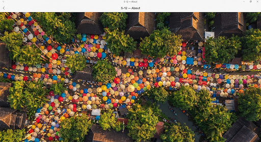

Mission
Empowering Local Craft
The TonPao Map is an initiative dedicated to illuminating the vibrant community tourism and rich handicraft heritage of Chiang Mai. By mapping local artisans, cultural landmarks, and hidden gems, we aim to bridge the gap between travelers seeking authentic experiences and the communities that preserve them.
handshake
100+
Local Artisans
tour
50+
Cultural POIs
account_balance
In Collaboration With
Ton Pao Municipality
This platform is proudly developed in partnership with the Ton Pao Municipality, aiming to foster sustainable tourism, support local economies, and preserve the unique cultural identity of our region for future generations.